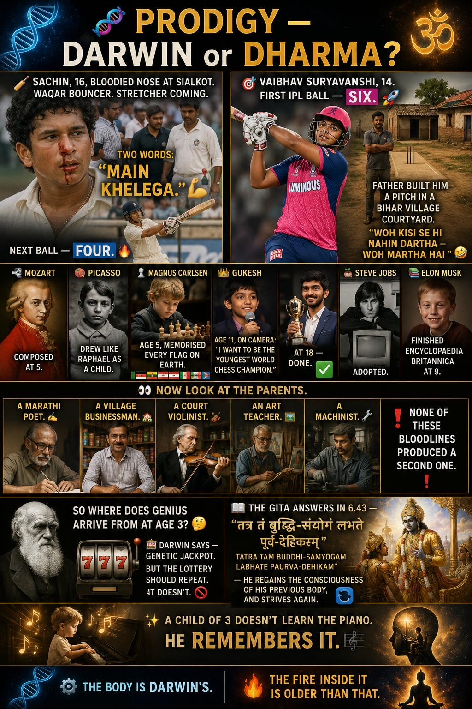

Sialkot, 1989. A bouncer from Waqar Younis smashes into a sixteen-year-old's nose. Blood on the white shirt. The physio runs out with a stretcher. The boy waves him off, dabs the blood, and says two words India still replays: "Main khelega." I will play. Next ball — four. The boy was Sachin Tendulkar.
His father was a gentle Marathi poet. His siblings, lovely and unremarkable. So where did that come from? Thirty-six years later the same question landed on a fourteen-year-old — Vaibhav Suryavanshi, who hit his first IPL ball for six and a hundred off thirty-five balls. The cameras panned to the family box: ordinary, beaming, baffled people.
One path says genetic jackpot.
The other — Gita 6.43 — says the child
isn't learning. He's remembering.

The Roll Call
Any theory of talent has to explain these people. Notice the ages.
Inherited? Prodigies rarely have prodigious parents or children. Learned? No three-year-old has had time to practise. So what is this thing — neither clearly inherited nor clearly learned?
Darwin — The Body's Inheritance
Genes, recombination, the brain, and why the family tree lies.Before reaching for past lives, give science its due. It explains more than the mystics admit — and less than the gene-worshippers believe.
Why the parents look ordinary
Extreme talent sits at the far tail of a bell curve. By regression to the mean, extreme outliers come from above-average parents — not extreme ones. Genius isn't a torch passed hand to hand. It's a lightning strike.
The child stands far past the parents — and his own children will drift back to the crowd. Genius does not breed true.
Emergenesis: every tumbler must align
Geneticist David Lykken named the key idea almost nobody knows: emergenesis. Some traits aren't the sum of good genes but the product of a precise configuration — a combination lock where every tumbler must fall into place, or the door stays shut.
The genius is real and genetic — yet effectively non-heritable, because that exact combination almost never survives the shuffle. Erupts from a placid family; leaves no dynasty.
The prodigy's brain
Genes build hardware — and the prodigy's is measurably different. Psychologist Joanne Ruthsatz found one trait off the charts in nearly every child prodigy: working memory. Add ferocious focus and an early pull toward one domain, and you get a brain that absorbs a field at a rate that looks like magic.
Bigger working memory, faster (myelinated) pathways, and a domain region that specialises absurdly early. The brain is not doing more work — it is doing less, because it perceives in whole patterns. This is what chess masters call "chunking."
The unsettling footnote: savant researcher Darold Treffert found knowledge that seems "factory-installed" — he called it genetic memory, ability never learned in this lifetime yet already in the wiring. A materialist coined that phrase. Hold onto it; its spiritual twin is coming.
Darwin explains a great deal — the ordinary parents, the eruption, the speed. But not the hardest part: why this child? Why does the gift arrive as a vocation — Mozart didn't just play, he belonged? Genetics shows the lock can open. It can't say who is standing on the other side of the door.
Dharma — The Soul's Inheritance
Bhagavad Gita 6.43, the unfinished yogi, and the memory that survives death.Five thousand years before the bell curve, Arjuna asks Krishna the same question: what happens to the seeker who tries, makes real progress — and dies before the goal? Krishna's answer is the heart of this essay. The fallen yogi (yoga-bhraṣṭa) is reborn in a worthy home. And then:
tatra taṃ buddhi-saṃyogaṃ
labhate paurva-dehikam
yatate ca tato bhūyaḥ
saṃsiddhau kuru-nandana
"There he regains the intelligence of his former body — and strives once more toward perfection."
Paurva-dehikam — "of the former body." The faculties of one life are recovered, not re-learned. The next verse drives the nail home:
pūrva-abhyāsena tenaiva
hriyate hy avaśo 'pi saḥ
"By that former practice he is carried onward — even against his will."
Now look again at the four-year-old who won't leave the piano, the boy who picks up the bat like reuniting with an old friend. Avaśo 'pi — "helplessly." Not a hobby. A current from a former life, sweeping the child along before choice can intervene.
The prodigy, in this reading, is not at the start of a journey. He is at stage four of an old one — a yogi who ran out of life mid-stride and has resumed exactly where the thread was cut.
Every disciplined act leaves a saṃskāra — an imprint on the subtle mind. These become vāsanā, your inclinations. Patañjali says they survive death and ripen in the next birth. The body decays; the saṃskāras don't. They are the soul's saved file — waiting for hardware that can run them.
And note the address: the yogi is reborn where the gift can be fed — a home with a piano, a father who builds a courtyard pitch. The Gita called the demographics of talent three millennia before anyone measured them.
An avatāra (Rama, Krishna) is the divine descending, fully self-aware. A prodigy is humbler — an ordinary soul cashing a cheque it wrote in a previous life. Not a god. Just us, a few lifetimes further down the road. A more hopeful idea, not a smaller one.
One whisper of evidence: for decades at the University of Virginia, psychiatrist Ian Stevenson documented thousands of children — most around age three — who recalled verifiable details of a past life. Not proof. But set beside Treffert's "genetic memory," two researchers from opposite worlds point at the same impossible thing: knowledge that arrived without being learned.
The Body Is Darwin's. The Fire Is Older.
Why this is not an either/or — and the metaphor that unites the two.The fork is false. The two readings aren't rivals describing the same layer — they describe different layers, and they fit together a little too well.
The Darwin reading — the hardware
- Genes are recombined into a rare, unrepeatable hand.
- Emergenesis: a configuration that won't survive to the next generation.
- A brain with vast working memory and fast, early-myelinated pathways.
- Answers: how is the gift physically possible?
- Goes silent on: why this soul, why this certainty?
The Dharma reading — the software
- A yogi's unfinished practice (abhyāsa) carried as saṃskāra.
- Reborn into a family able to support the gift (Gita 6.43).
- The faculties are recovered, not acquired — "carried onward against his will."
- Answers: why this soul, why so early, why the vocation?
- Goes silent on: the physical mechanism of recovery.
Each lens is blind exactly where the other sees. Stop making them fight. Let them compose — one metaphor holds both:
A phone with no apps is a slab of glass. The richest software is useless without a chip to run it. The prodigy is the rare moment when an exceptional device (the genetic jackpot) boots up carrying an exceptionally developed file (the soul's accumulated practice). You need both. Either alone is ordinary.
Suddenly the paradoxes dissolve:
- Why ordinary parents? They gave only the device. The file belonged to the incoming soul.
- Why so early? A young brain is uncluttered — the old file loads cleanly, at full volume, before life's noise drowns it.
- Why the certainty, the "main khelega"? To the child it isn't ambition. It feels like returning.
A child of three does not learn the piano.
Sometimes, he remembers it.
It even explains the wound — why prodigies are so often lopsided, dazzling in one room and dim in the rest. A soul that poured a thousand lifetimes into one pursuit arrives rich in that single currency and ordinary in all others. Not a defect — the signature of a long, narrow, faithful practice.
What This Means For The Rest Of Us
Stop comparing your child to the neighbour's tree
Your child's pace is not a verdict on your parenting. Every child carries a different file. Let each ripen at its own pace.
The gift is borrowed, not earned in this life
It asks for humility — you stand on the shoulders of someone you used to be. And it can be squandered. Vaibhav still has to face the next ball.
You are writing this life's file right now
Every prodigy was once ordinary, and practised. Your abhyāsa today isn't lost — by 6.44 it carries forward, and will one day carry you toward something a future family will call a miracle.
Five forces, where both lenses agree
Strip away the metaphysics and five forces converge in every prodigy — the themes along the base of the hero image:
① Unique Genius
The raw, unrepeatable configuration — the emergenic hand of cards that science calls a one-in-millions build.
② Deep Focus
An attention so total it looks like trance. The child does not try to concentrate; the world simply narrows to the one thing.
③ Relentless Passion
The pull of 6.44 — avaśo 'pi, "even against his will." Not chosen, not negotiable, felt as destiny rather than decision.
④ Saṃskāras & Past Impressions
The carried-over file — the soul's developed intelligence (buddhi-saṃyogam) recovered, not re-learned.
⑤ Nurture, Environment & Grace
The courtyard pitch, the household piano, the family that could notice. The Gita's "worthy family," without which even the richest file never loads.
Remove one and the prodigy vanishes. All five must align at once — which is exactly why prodigies are rare.
So — Prodigy, or Reincarnation?
Both. And neither alone. Genetics builds the instrument but can't explain the music from a child too young to have composed it. The spiritual reading names the musician where science only describes the violin.
Next time a fourteen-year-old launches his first ball into the night, don't rush to settle the score. Stand in the bafflement — one of the last places where the gene and the Gita lean toward the same impossible child, and fall silent together.
Genius is not the gift of being born great.
It is the recovery of greatness you once worked for —
in a life you no longer remember,
by a self you are still becoming.